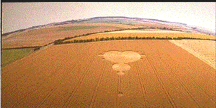

The Mandelbrot Set and Julia Sets and Crop Circles
Several years ago, one of the London tabloids printed this picture

with the caption
Proof Positive of Extraterrestrial Intelligence! No Human Mind Could Imagine This Shape
Return to
The Mandelbrot set
.